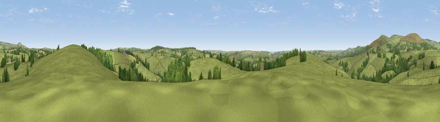

Viewpoint near Ugborough
#19995 in England · top 43% of its area beats it · near UgboroughThe view, rendered

A 360° render of this exact spot computed from the terrain model, tree cover and land cover — summer colours, afternoon light, calibrated against photographs of famous viewpoints. Real trees, hedges and buildings will differ in detail.
The panorama
Grey silhouette: terrain skyline in each direction (720 bearings, Earth curvature and refraction included). Dashed green: skyline with trees (+15 m) and buildings (+8 m) as obstacles. Blue strip: how far the ground is visible on each bearing.
Where the view opens
Wedge length = distance to the farthest visible ground on that bearing (vegetation-aware). Rings at 10, 25 and 50 km.
What fills the view
80% grassland · 15% woodland · 4% cropland ·
Angular shares of the visible panorama (visual magnitude), not map area. Landscape diversity 0.28 (0–1 Shannon).
Key numbers
More beautiful places nearby
The staircase of upgrades: each row has a higher view potential than everything closer. Driving times are estimates from straight-line distance, calibrated against real road routing — check an actual route before setting out.
| Place | Direction | Drive | Score |
|---|---|---|---|
| Viewpoint near Ugborough | WSW · 1 km | ~4 min | 54.7 |
| Western Beacon | NW · 4 km | ~9 min | 81.9 |
| Viewpoint near Lee Moor | WNW · 15 km | ~27 min | 82.7 |
| Viewpoint near Hope | S · 16 km | ~28 min | 84.4 |
| Viewpoint near East Prawle | SSE · 21 km | ~35 min | 84.6 |
| High Peak | NE · 52 km | ~73 min | 85.3 |
| Pencarrow Head | W · 53 km | ~75 min | 86.0 |
| Viewpoint near Lesnewth | WNW · 67 km | ~91 min | 87.7 |
50.37945, -3.85259 · source: screening · position refined by local search. Computed location — check access rights before visiting.